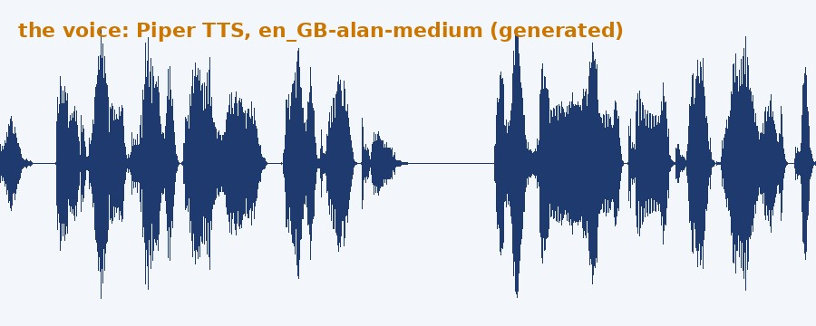
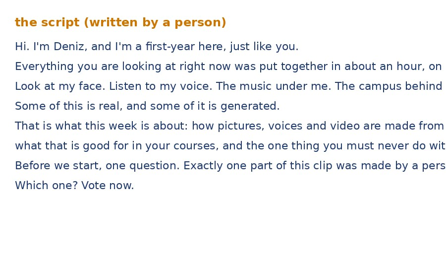
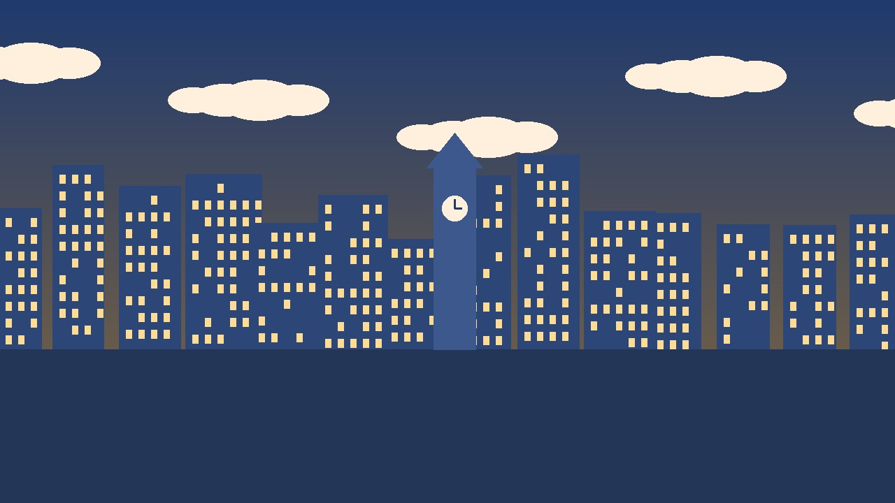

Opening: Which Parts Are AI?
Forty-five seconds of video. The person on screen, the voice, the script, the music, the background: some of it is real, some of it is generated. Watch once, then vote.
Forty-five seconds. Everything in it was generated except one part.
Still 1: the face

Still 2: the voice (waveform)

Still 3: the script

Still 4: the music and the background
One Model, Many Media: Everything Becomes Tokens
Click a medium to see how it enters the window. Whatever goes in, the model does one thing: predict the next token from the ones before (Lecture 3).
Click a medium above.
What “multimodal” means
The model has one way of representing a picture, a sentence and a sound, so it can answer a question about a photo in words, or turn words into a picture. The window is one sequence of tokens, whatever they came from.
What it does not mean
It does not “see” the way you do. It predicts the likeliest tokens given the patches it was shown, which is why it reads a chart confidently and sometimes wrongly, and why it cannot know what is outside the frame.
Text to Image: Noise, Then Less Noise
Press Denoise and watch random pixels become a picture, step by step. This is diffusion: no library of pictures is copied; each step removes a little noise in the direction your words point.
Three consequences for you
- Describe, do not name. “In the style of” a living artist is both a rights problem and a vague instruction; describe the look instead.
- Edit, do not regenerate. Both apps edit the picture you have from an instruction (“make the sky overcast”). A new roll is a new picture.
- Text inside pictures is still the weak spot: check every letter, or leave the text out and add it afterwards.
Why “New seed” gives a different lighthouse
Sampling again (Lecture 3). The app cannot redo “exactly that one, but bluer” from scratch; it can only edit the one you have. Keep the file you like.
Activity 1: Describe to Generate
Write the five parts for one image you could actually use. The prompt assembles on the right; press Check for the usual problems, then copy it into Copilot or Gemini on your phone and run it once. Submit the prompt and one line on what the first picture added or ignored, on the Google Form.
1. Task and context. Generate one image; who it is for and where it will appear.
2. Subject and composition. One subject, where it sits, the background. Say what is not in it.
3. Style, format, colours. Photo or illustration; portrait or landscape; palette.
4. Rules. What to leave out.
Your prompt
Image to Text: What the Model Sees, and the 2026 Apps
Good at
- Describing a scene, an object, a layout, a diagram
- Reading printed text, labels, signs; most handwriting
- Turning a photographed table into a typed one
- “What is wrong in this picture”, when the wrong thing is visible
Guesses, confidently
- Exact values on a chart with no data labels
- Small text, low contrast, rotated text
- Counts above about ten; who is who in a group
- Anything outside the frame: what is behind, what happened before, who took it
What the apps offer (as of the week this page was written)
| Microsoft Copilot | Google Gemini | |
|---|---|---|
| Generate an image | Yes, in the chat; ask for edits | Yes, in the chat, including editing an uploaded picture |
| Read an image | Upload or paste a photo, chart, screenshot | Upload or paste; also from Google Drive |
| Speech | Voice input; reads answers aloud | Voice input; Gemini Live for conversation |
| Transcribe a recording | Upload audio on some plans; otherwise paste a transcript | Upload audio; NotebookLM for long recordings |
| Video | Describe a frame; no generation on the university plan | Generation (Veo) on paid plans only; understanding of uploaded clips |
Features move monthly and plans differ. For today: generate an image in either app; read the chart in either; both work on a phone.
Takeaways
Tokens for everything
Patches, slices of sound and frames enter the same window as words. Same prediction, same strengths, same failure patterns.
Pictures are predicted, not fetched
Diffusion removes noise towards your words. Two runs give two pictures; an edit changes the one you have.
The five parts, with pictures
Task and context; subject and composition; style and format; rules. Describe, do not name; no text in the image.
Reading is guessing
Ask for READ versus ESTIMATED; check a value against the data, not against a second look at the picture.
Next companion page: UNIV198_AI-Literacy_Fall-2026_W06-L09_CompanionPages_02_making-and-judging.html (the demo, the four moves with pictures, Read This Chart, tells and provenance, the take-home disclosure line).